Module 8 — Security | Pages 481-494
Lab 17 – Signing Writes from a ViewApp
AVEVA™ Operations Management Interface 2023
Lab 17 – Signing Writes from a ViewApp
Introduction
In this lab, you will configure security classifications for attributes in the $Mixer.Agitator template.
You will configure the Cmd attribute security classification to SecuredWrite and the Speed.SP
attribute security classification to VerifiedWrite.
During testing, you will attempt to write to attributes as users with different operational
permissions. You will use the Secured Write and Verified Write dialog boxes to operate the agitator
in a running ViewApp.
Objectives
Upon completion of this lab, you will be able to:
Configure security classifications for attributes in automation objects
Operate Secured Writes and Verified Writes as users with required permissions
Use the Secured Write and Verified Write dialog boxes in a running ViewApp
$Mixer.Agitator Attribute
Security Classification
Cmd
SecuredWrite
Speed.SP
VerifiedWrite
) - selected
• Status ([$Motor])
• Speed,PV ([$Agitator])
• Speed,SP ([$Agitator])
• Bottom info: "4 of 265 displayed, 1 selected"
• Name: Cmd
• Description: Command
• Data type: Boolean
• False label: Stop
• True label: Start
• Writable: User writable
• Initial value: Stop
• Security Classification icon (shield with checkmark, red arrow)
• Dropdown menu showing:
• FreeAccess
• Operate
• SecuredWrite (selected)
• VerifiedWrite
• Configure
• ViewOnly]
Module 8 – Security
AVEVA™ Training
Configure Attributes with Signed Write Security Classifications
In the following steps, you will configure agitator objects with attributes with signed write security
classifications.
1.
On the Templates tab, in the Training \ Project toolset, double-click $Mixer.Agitator to open
it in the Object Editor.
2.
On the Attributes tab, in the Attributes list, select the Cmd attribute.
3.
In the right pane, to the right of the Initial value field, click the Security Classification icon,
and then select SecuredWrite.
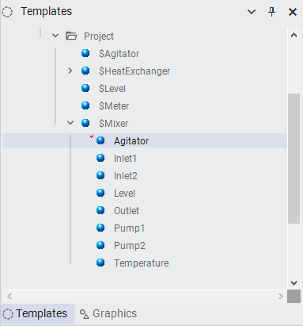
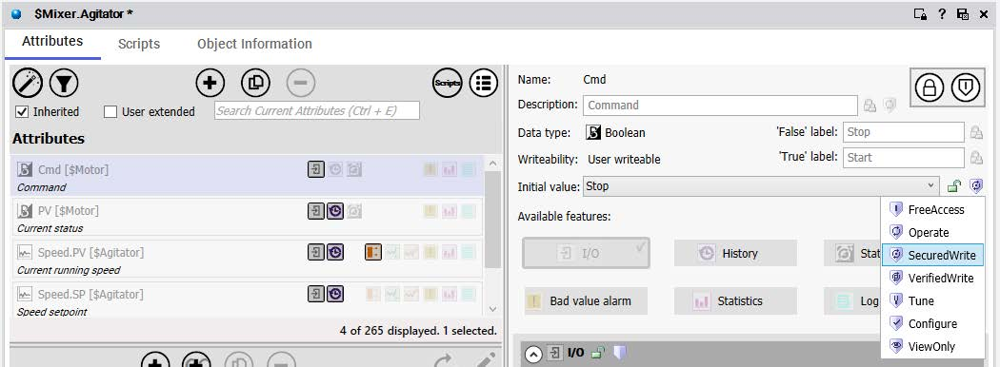
Lab 17 – Signing Writes from a ViewApp
AVEVA™ Operations Management Interface 2023
4.
Click the Lock icon to the right of the Initial value field to propagate the changes down to
objects derived from this template.
5.
In the Attributes list, select the Speed.SP attribute.
6.
In the right pane, to the right of the Initial value field, click the Security Classification icon,
and then select VerifiedWrite.
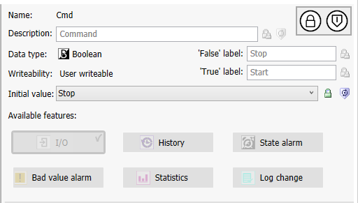
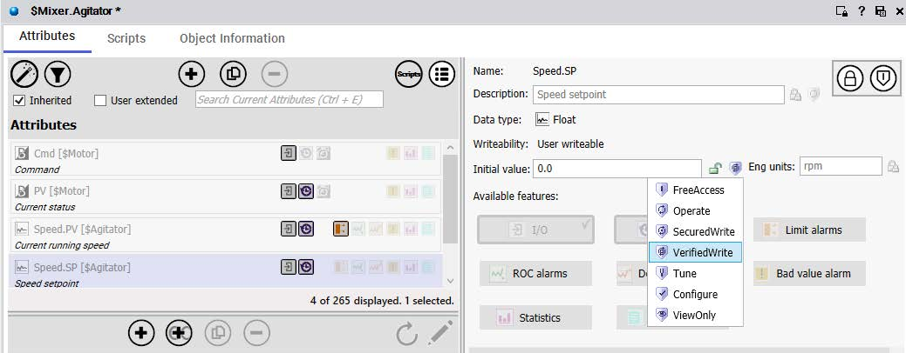
Module 8 – Security
AVEVA™ Training
7.
Click the Lock icon to the right of the Initial value field.
8.
Save and close the $Mixer.Agitator template, and check it in.
9.
Open $Mixer.Agitator again.
10. In the Attributes list, ensure that the Cmd attribute is selected.
11. In the right pane, to the right of the Initial value field, click the Lock icon to unlock it.
This will allow the attribute values to be changed at runtime.
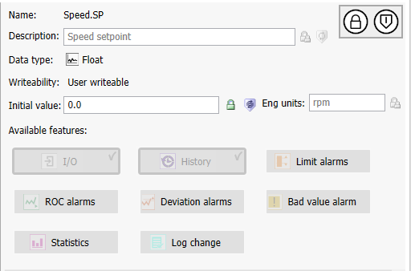
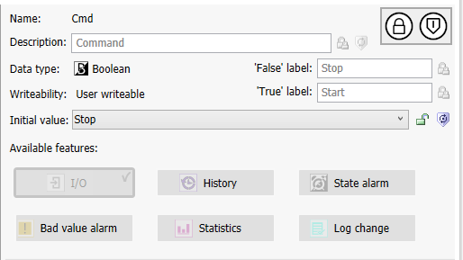
Deploy Completed: 8/8 objects deployed**
• Close button (blue)]
Lab 17 – Signing Writes from a ViewApp
AVEVA™ Operations Management Interface 2023
12. In the Attributes list, select Speed.SP.
13. In the right pane, to the right of the Initial value field, click the Lock icon to unlock it.
14. Save and close the $Mixer.Agitator template, and check it in.
Redeploy the Agitator Objects
Now you will redeploy the updated agitator instances.
15. In the Deployment view, right-click AppEngine1 and select Deploy to deploy the changed
objects.
Use the default deployment settings.
Notice that eight Agitator objects are deployed.
16. Click Close to close the Deploy dialog box.
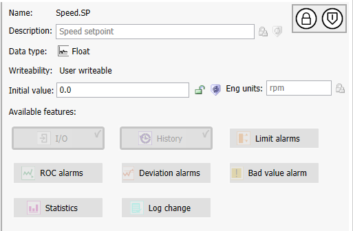
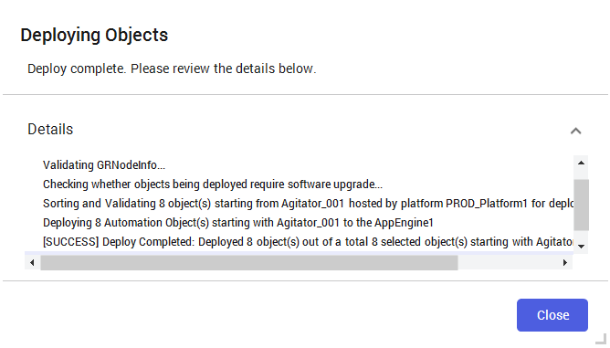
Module 8 – Security
AVEVA™ Training
Test the ViewApp in a Preview Session
In the preview session, you will test writing to attributes of the agitator instances as different users.
17. Switch to the ViewApp preview session.
Notice that the user that was logged in for the previous lab is still logged in, which for the
examples below, is
18. Navigate to Mixer100.
19. In the left pane, click Agitator_001.
The command panel appears.
20. On the command panel, click Stop.
The Secured Write dialog box appears.
Notice that the current logged in user appears in the Domain and User name fields.
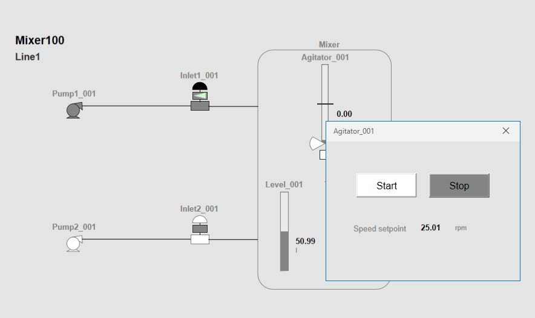
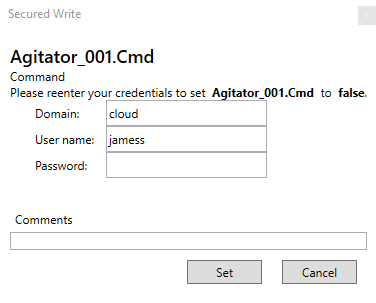
Lab 17 – Signing Writes from a ViewApp
AVEVA™ Operations Management Interface 2023
21. Enter
in the Comments field as Command agitator to stop.
Your instructor will provide the domain, user, and password information.
The following example shows cloud as the domain and karent as the user.
22. In the Secured Write dialog box, click Set.
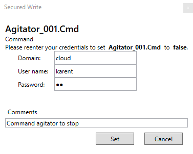
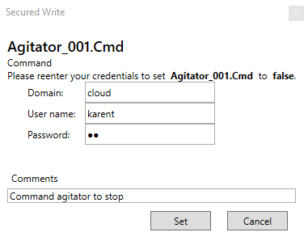
Module 8 – Security
AVEVA™ Training
Notice that the command panel shows a security error. This is because the user entered for
setting the command does not have the proper permissions, so the operation failed.
23. On the command panel, click Stop again.
24. Enter
the Comments field as Command agitator to stop.
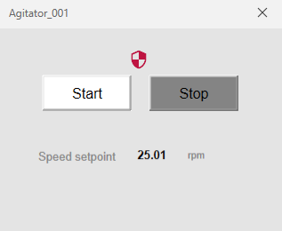
Lab 17 – Signing Writes from a ViewApp
AVEVA™ Operations Management Interface 2023
25. Click Set.
Notice that the agitator stops and there is no security error. This is because the user entered to
set the command had the proper permissions, so the operation succeeded.
26. On the command panel, click Start.
The Secured Write dialog box appears.
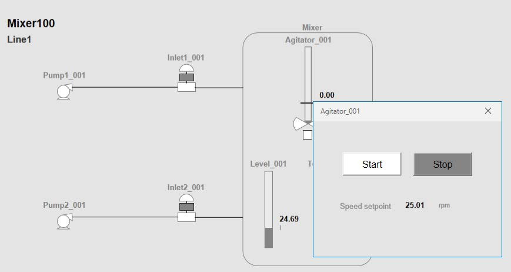
Module 8 – Security
AVEVA™ Training
27. Enter
agitator to start.
28. Click Set.
Notice that the agitator starts.
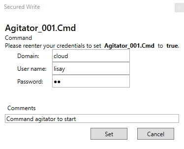
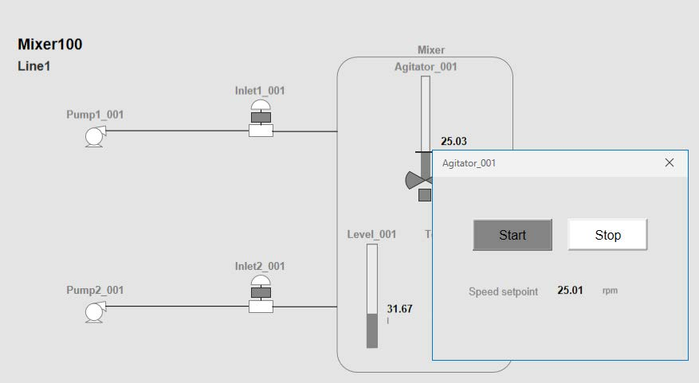
Lab 17 – Signing Writes from a ViewApp
AVEVA™ Operations Management Interface 2023
29. In the command panel, enter a Setpoint speed as 70 and press Enter.
The Verified Write dialog box appears.
30. Enter
Comment as Reset the setpoint as operators.
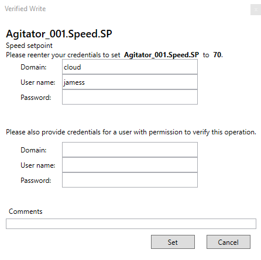
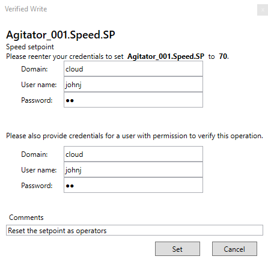
Module 8 – Security
AVEVA™ Training
31. Click Set.
Notice that the Verified Write dialog box displays a message as Operator and Verifier have
to be two different users.
32. Change the verifier to
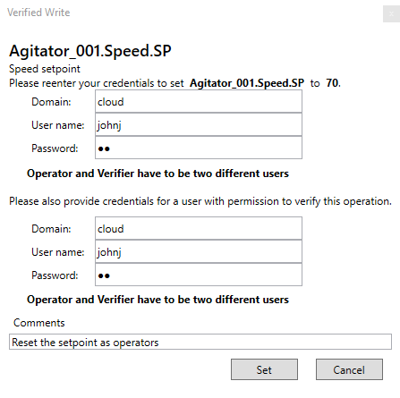
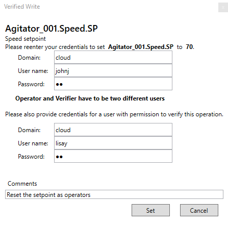
Lab 17 – Signing Writes from a ViewApp
AVEVA™ Operations Management Interface 2023
The Verified Write dialog box closes, and the command panel shows a security error to the
left of the speed setpoint value.
33. In the command panel, enter the Speed setpoint as 70 again and press Enter.
The Verified Write dialog box appears.
34. Enter
as required, and a Comment as Reset the setpoint approved by supervisor.
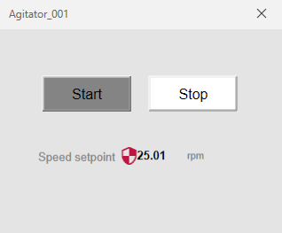
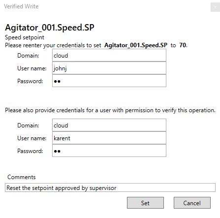
Module 8 – Security
AVEVA™ Training
35. Click Set.
Notice that the Speed setpoint for Agitator_001 is written as 70 this time.
36. Close the command panel.
37. When you are finished testing, minimize the preview session.
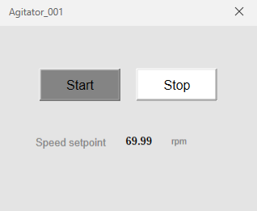
Review above.